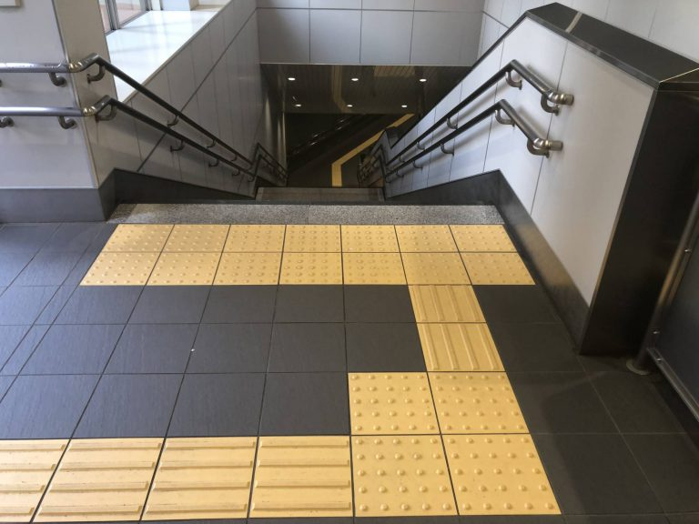

"When we design for disabilities, we make things better for everyone."
This site explores some basic accessibility practies for web development!
Feel free to reach out for edits and additions 💌 katiechai21@icloud.com.
Hover over me for more information about this visual.
ℹ️ This yellow block is an illustration of tactile pavement.
Tactile pavement originated in Japan. The paving blocks assist individuals with visual impairments.

Headings 💻
Headings are help screen readers navigate through a site.
Use these to structure your site so readers can easily skim through.
<h1>Header 1</h1>
<h2>Header 2</h2>
<h3>Header 3</h3>
<h4>Header 4</h4>
<h5>Header 5</h5>
<h6>Header 6</h6>
Alt Text 💻
Alt text can also be used with screen readers for people with visual impairments.
<img src="IMAGE PATH HERE" alt="Description of image">
Focus Indicators 💻
Focus indicators allow users to navigate the site without using a mouse.
By pressing tab - using a piece of assistive technology - you can highlight every actionable item on a website.
These indicators will appear on most sites by default. Make sure you don't hide them.
Color Contrast 💻
Poor color contrast can make your site inaccessible for people with color blindness.
An example of a potentially problematic color palette would be using green and red to indicate positive and negavtive features.
Use this online tool to check your color palette.
Descriptive Links in URLs 💻
By providing descriptive links for your URLs, users can gather addiitonal context that will allow them to navigate your site with ease.
Try to see if your links would make sense out of context. If they don't, try to add more info.
Font Choice 💻
Use a sans serif font that allows readers to easily distinguish between letters.
Here is a short list of dyslexia-friendly fonts: Arial, Helvetica, Comic Sans, Calibri, Dyslexie.
Generally, dsyslexia-friendly fonts are give each letter a unique shape that prevent letter flipping.
Clickable Action Size and Spacing 💻
Make clickable items large so users with limited mobility can easily select.
Space these items out so they do not overlap either.
Hashtag Formatting 💻
When using a hashtag, use CamelCase to help out screen readers.
Here's an example: #HelloWorld.